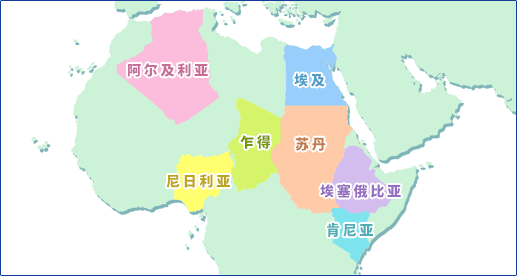

|
非洲的酸奶阿尔及利亚/埃及/埃塞俄比亚/肯尼亚/苏丹/乍得/尼日利亚 
阿尔及利亚在地中海沿岸和阿哈加尔山脉南侧，盛行牧畜业。“Takamart”是将前次剩下的凝乳加至山羊乳和羊乳中发酵，经过滤后收集凝乳，再用手反复揉搓去除乳清，将凝乳块在日光下干燥2-3天后阴干装入皮袋保存。另外，“Aulls”是将乳液自然发酵凝固，装入皮袋后搅拌去除黄油，将剩下的黄油牛奶加热后制成凝乳，然后铺成平板状在日光下干燥制成的。 埃及由保加利亚菌和嗜热链球菌发酵而成的酸奶品种“Laban Zabady”最受人们欢迎，特别是用水牛乳制成的酸奶。在农村，把鲜奶放入陶瓷容器自然发酵，去除漂浮的奶油后制成“Laban raybe”。可直接吃，也可用作芝士的原料。另外，将鲜奶放入皮袋中发酵，摇晃后去除黄油制成黄油牛奶，然后在5-7月的炎热季节放入陶瓷容器（称为“Zeer”）中蒸发水分，加放食盐后加工成浓缩发酵乳“Laban Zeer”。用水稀释后可制成清凉饮料。这种“Laban raybe”或“Laban Zeer”与小麦粉或者烹调好的小麦混合后煮透，然后在日光下晒干可制成“Kishk”。一年四季都可用水稀释食用。 埃塞俄比亚传统的发酵乳“Ergo”是将橄榄枝燃烧后熏烤陶瓷容器内部，然后在该容器中自然发酵牛乳制成的。烟熏风味是其特点。除此以外，还有黄油牛奶“Arrera”和浓缩发酵乳“Ititu”。 肯尼亚原住民马赛族常食用发酵乳。用于制作发酵乳的容器是将内部烟熏后的葫芦。使牛奶自然发酵，去除黄油后的黄油牛奶叫做“Maziwa lala”。还有将牛乳用香草做成的容器进行发酵而制成的“Mursik”，将骆驼乳自然发酵制成的“Susa”等。 苏丹由于地处埃及南部，这里的酸奶类似埃及南部的发酵乳。“Zabady”和“Laban raybe”和埃及的制作方法一样。食用Laban raybe时，加些香料。在Laban raybe里加入奶油并用水稀释后的“Govasha”是冬季的餐桌饮料。 乍得使用发酵乳或者黄油牛奶，与烹调成粥状的小麦粉混合制成“Roaba”。 尼日利亚有一种使用山羊乳自然发酵的叫“Nono”。 |